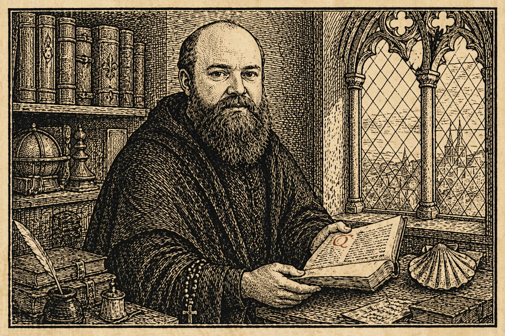
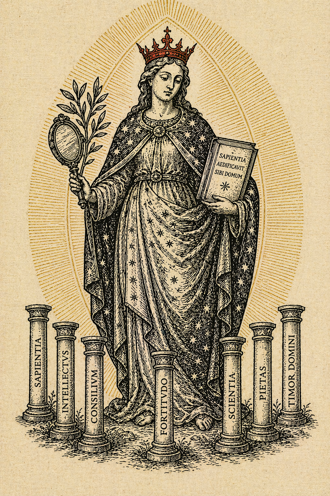
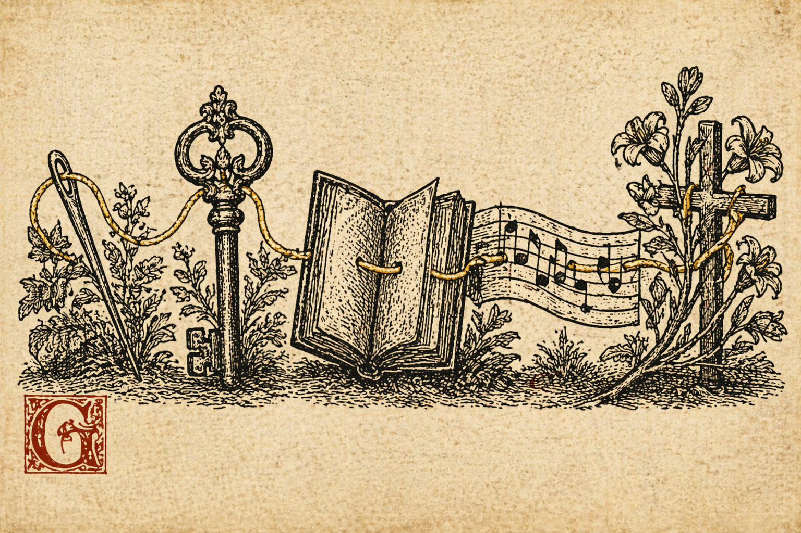
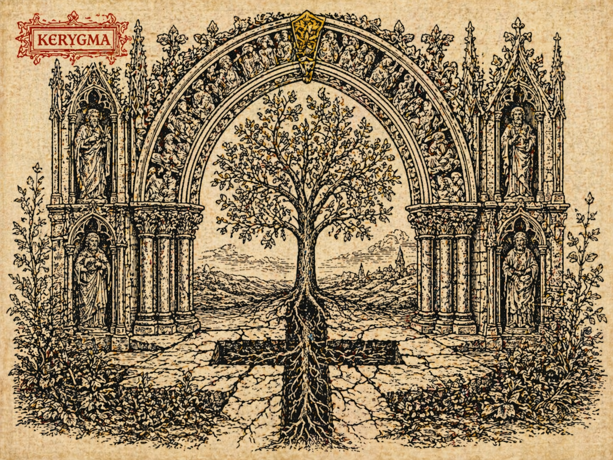
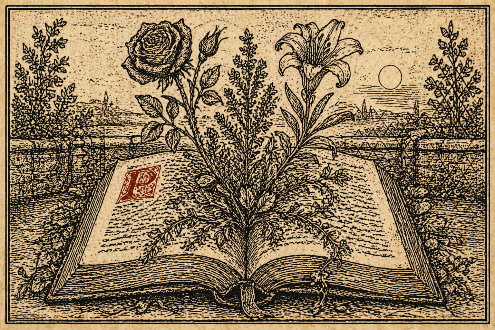
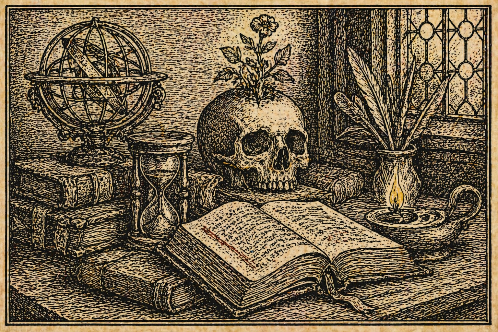
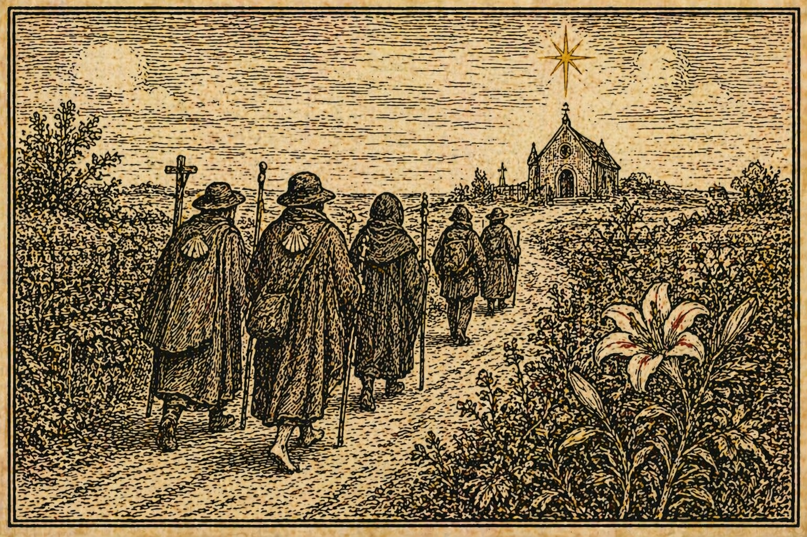

About Me
Professional profile and creative practice — theologian, poet, and contemplative practitioner.
VisitPoet · Theologian · Songwriter · Contemplative
Via Crucis, Via Lucis
Mark Baldwin-Smith is a poet, coder, and creative artist living in Cambridge, UK, with a lifelong fascination with theology, philosophy, and science, particularly in the contested territory where they illuminate each other's blind spots.
Mark is a Christian of the Anglo-Catholic tradition, rooted in the community of Little St Mary's in Cambridge, with a deep love of contemplative prayer shaped by Carmelite, Hesychast, and Zen influences. While his faith is Trinitarian and Christ-centred, he is a student of humanity in all its wondrous varieties, and encounters the divine in beauty, love, and community wherever he finds it.

Sweet Sophia, Holy Hokhmah, Wisdom of old,
By Your angels and prophets foretold.
Seven pillars, facets of the Spirit seven,
And seven churches, Your body, Your leaven.
Your banquet table laid out, bread & wine,
A taste of promised communion, God mine.
Mother of the lost, Sister of the wise,
Under Your loving wings, an eternal prize.
Womb of all creation, Source of all being,
Sustainer of all life; the blind, seeing.
Lover of my soul, redeemer of my pain,
Pained, Yourself, for loving again & again.
Bringing all nations into Your embrace,
Arms outstretched on a cross, in my place.
Made flesh by our mother, the Holy Grail,
Virgin foretold, who witnessed every nail.
Her loving pains and Yours are made ours,
In eternal love, a garden of many flowers.
— Mark Baldwin-Smith

Professional profile and creative practice — theologian, poet, and contemplative practitioner.
Visit
Thirteen poems. One journey. Follow the thread.
Visit
A gentle, trauma-aware Christian grammar for spiritual healing, formation, and coherence repair.
Visit
The Opus Magnum as Christian Way: Alchemy, Theology, and the Soul's Transformation.
Visit
Theological essays published on Substack. On scripture, liturgy, mysticism, and the life of prayer in the Anglican Catholic tradition.
Visit
A vision for contemplative community rooted in the Walsingham tradition — a place of pilgrimage, prayer, and the common life.
Visit
Letters, commissions, and theological conversation are welcome.
I am found in the usual places.